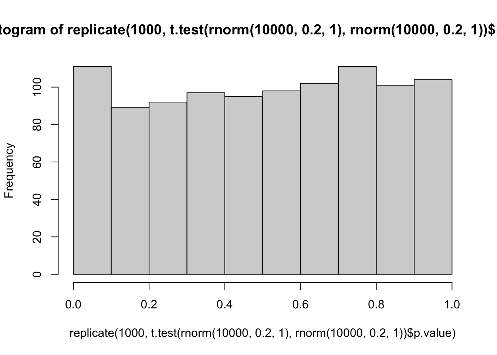
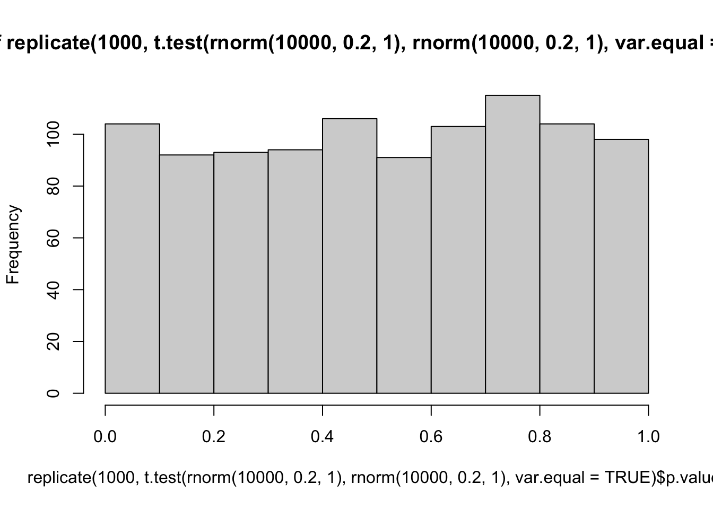
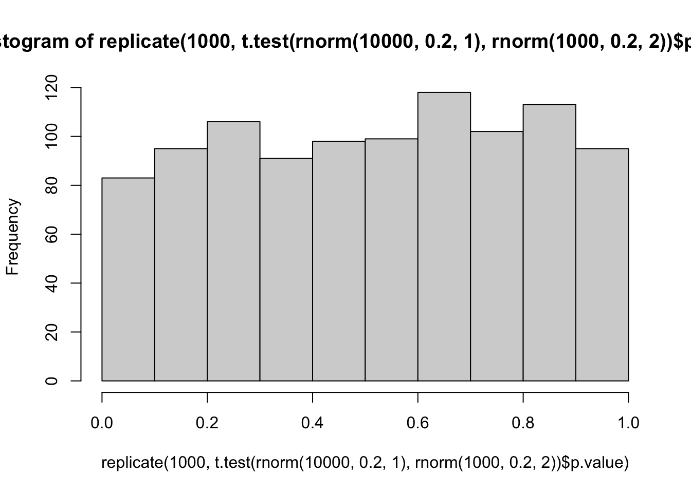
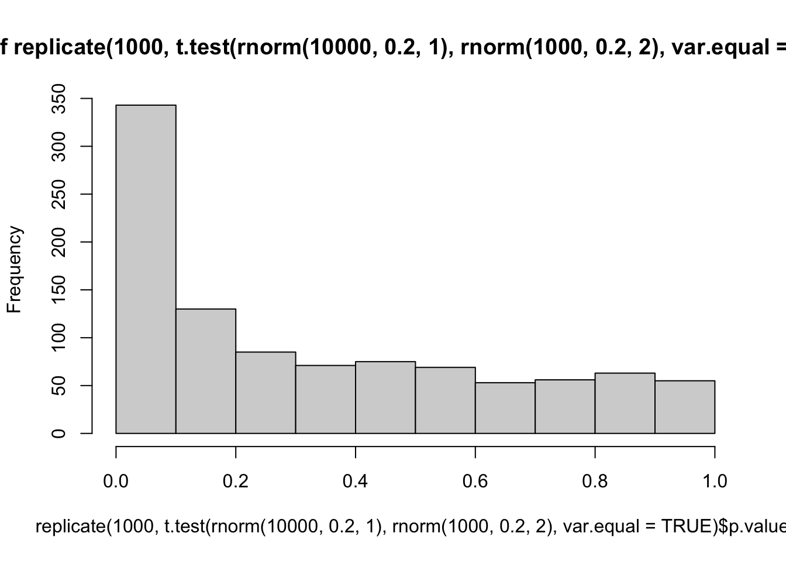
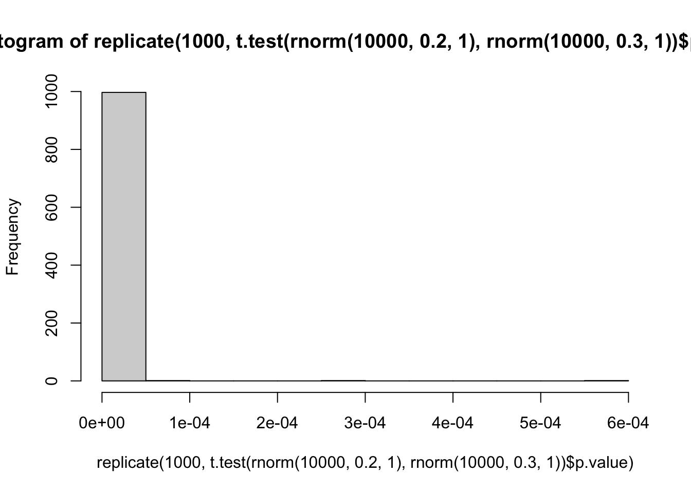
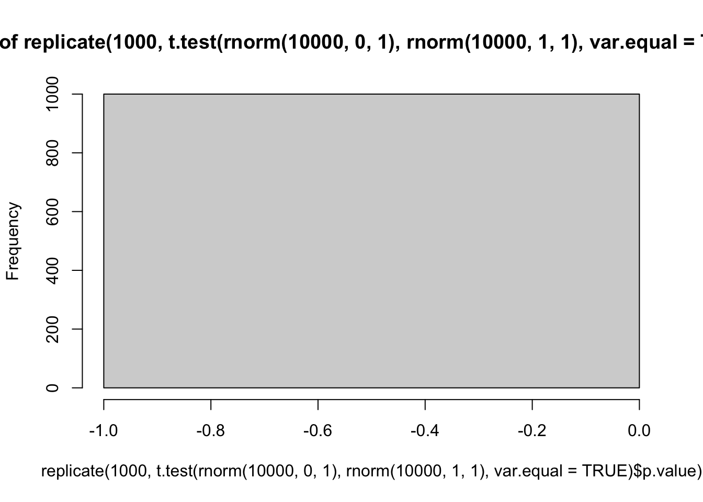
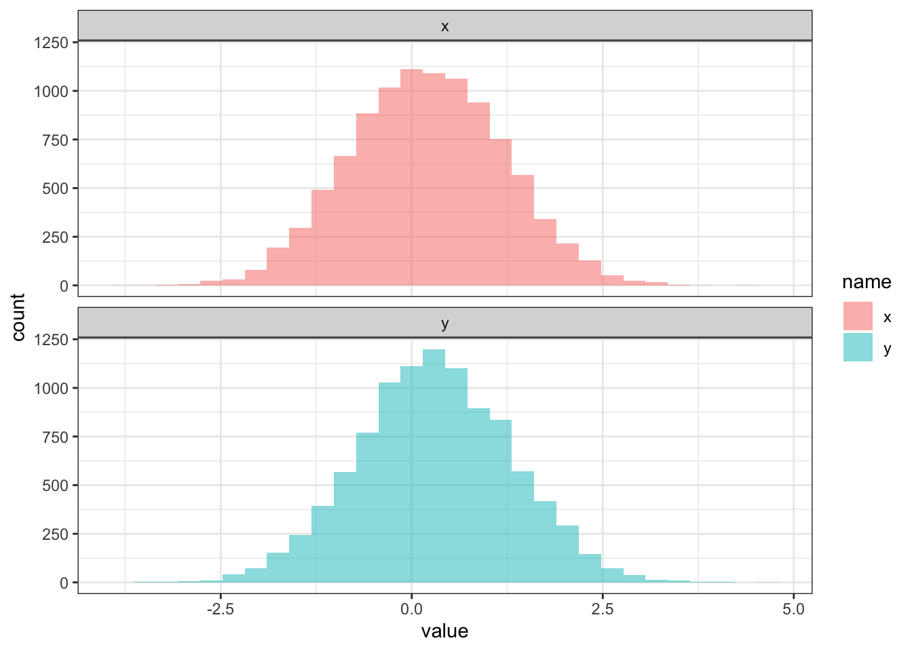

#t.test(iris$ ~ wc3_units_armor$armor_type,
# var.equal = TRUE)Тест Стьюдента и тест Велча
statistics
Проблема дорожных карт по статистике
Наверняка каждый при проведении статистических тестов сталкивался с проблемой выбора подходящего теста. В научном сообществе есть определенная популярность у “дорожных карт” по выбору статистического метода, пример ниже:

Я выбрала первую попавшуюся схему по запросу how to choose statistical test flow chart, в этой схеме есть сразу несколько ошибок, например миф про 30 наблюдений (тут вообще странное, по мнению автора схемы, при размере выборки больше 30 наблюдений можно использовать z-test).
Обычно этот миф звучит так: для небольших выборок меньше 30 наблюдений для применения t-теста нужно, чтобы было нормальное распределение данных, а если наблюдений больше 30, то можно использовать t-тест и так, в силу центральной предельной теоремы. Почему это миф, написано в статье “История одного обмана или требования к распределению в t-тесте”.
Статья подвергалась определенной критике профильных статистиков, но ключевой момент отражен верно — для t-теста не нужно нормальное распределение данных, нужно нормальное распределение тестовой статистики — то есть выборочных средних. Про это подробно собирается написать статистик Матвей Славенко, я обязательно сделаю репост, когда статья выйдет, очень нужен для сообщества такой материал.
Но вернемся к тесту.
Тест Велча
Часто также можно встретить требование к равенству дисперсий для теста Стьюдента и это правильное требование, если использовать классический тест Стьюдента. Однако в большинстве статистических пакетов, в том числе в R, реализован тест Стьюдента с поправкой Велча (Welch) или просто тест Велча, для которого нет требования по соблюдению равенства дисперсий.
Формула теста Стьюдента:
\[ t = \frac{\overline{X_1}-\overline{X_2}}{s_x\sqrt{\frac{1}{n_1} + \frac{1}{n_2}}}, s_x = \sqrt{\frac{(n_1 - 1)s_1^2 + (n_2 - 1)s_2^2}{n_1 + n_2 - 2}} \]
Чтобы запустить именно тест Стьюдента в R, можно использовать аргумент var.equal = TRUE.
Однако это делать не рекомендуется, поскольку при равных дисперсиях тест Стьюдента не будет сильно отличаться от теста Велча, а при разных тест Велча точнее.
Формула теста Велча:
\[ t = \frac{\overline{X}_1 - \overline{X}_2}{\sqrt{\frac{s_1^2}{n_1} + \frac{s_2^2}{n_2}}} \]
Количество степеней свободы:
\[ df = \frac{(s_1^2/n_1 + s_2^2 / n_2)^2}{(s_1^2/n_1)^2/(n_1-1) + (s_2^2/n_2)^2/(n_2-1)} \]
Для обучения я обычно рассказываю тест Стьюдента без поправки Велча, потому что на нем проще посчитать вручную тестовую статистику и степени свободы, однако потом обязательно уточняю, что для теста Велча требование равенства дисперсий необязательно. При этом в источниках часто можно встретить требование к равенству дисперсий, как и к нормальности распределения исходных данных.
Однако наиболее критичным требованием для проведения теста Стьюдента является независимость наблюдений, потому что от этого нарушаются математика теста и результаты получаются ненадежные.
Проверим на симуляциях
library(tidyverse)Начнем с ситуации, когда у нас обе выборки с одинаковым средним и стандартным отклонением, нормально распределены исходные данные даже.
Тест Велча
hist(replicate(1000, t.test(rnorm(10000, 0.2, 1), rnorm(10000, 0.2, 1))$p.value))
mean(replicate(1000, t.test(rnorm(10000, 0.2, 1), rnorm(10000, 0.2, 1))$p.value) < 0.05)[1] 0.066Тест Стьюдента
hist(replicate(1000, t.test(rnorm(10000, 0.2, 1), rnorm(10000, 0.2, 1),
var.equal = TRUE)$p.value))
mean(replicate(1000, t.test(rnorm(10000, 0.2, 1), rnorm(10000, 0.2, 1),
var.equal = TRUE)$p.value) < 0.05)[1] 0.051Теперь не равные дисперсии
hist(replicate(1000, t.test(rnorm(10000, 0.2, 1), rnorm(1000, 0.2, 2))$p.value))
hist(replicate(1000, t.test(rnorm(10000, 0.2, 1), rnorm(1000, 0.2, 2),
var.equal = TRUE)$p.value))
В основном надо смотреть в левую часть графика
mean(replicate(10000, t.test(rnorm(10000, 0.2, 1), rnorm(10000, 0.2, 5))$p.value) < 0.05)[1] 0.0494mean(replicate(10000, t.test(rnorm(10000, 0.2, 1), rnorm(10000, 0.2, 5), var.equal = TRUE)$p.value) < 0.05)[1] 0.0499Вроде ничего страшного и не случилось, в ситуации с неравными дисперсиями оба теста хорошо работают.
Давайте немного усложним
Используем лог нормальное распределение
mean(replicate(10000, t.test(rlnorm(1000, 0, 1), rlnorm(1000, 0, 5))$p.value) < 0.05)[1] 0.4099mean(replicate(10000, t.test(rlnorm(1000, 0, 1), rlnorm(1000, 0, 5), var.equal = TRUE)$p.value) < 0.05)[1] 0.3957С ошибкой первого рода все ок
Теперь симуляции когда отличия реально есть
hist(replicate(1000, t.test(rnorm(10000, 0.2, 1), rnorm(10000, 0.3, 1))$p.value))
mean(replicate(1000, t.test(rnorm(10000, 0.2, 1), rnorm(10000, 0.3, 1))$p.value))[1] 2.078948e-06hist(replicate(1000, t.test(rnorm(10000, 0, 1), rnorm(10000, 1, 1),
var.equal = TRUE)$p.value))
mean(replicate(1000, t.test(rnorm(10000, 0.2, 1), rnorm(10000, 0.3, 1),
var.equal = TRUE)$p.value))[1] 7.192786e-07И тут тест отлично работает
data.frame(x = rnorm(10000, 0.2, 1), y = rnorm(10000, 0.3, 1)) %>%
rownames_to_column(var = 'id') %>%
pivot_longer(cols = c(x, y)) %>%
ggplot(aes(value, fill = name))+
geom_histogram(alpha = 0.5)+
facet_wrap(~name, nrow = 2)+
theme_bw()
mean(replicate(1000, t.test(rnorm(10000, 0.2, 1), rnorm(10000, 0.3, 3))$p.value))[1] 0.02697992mean(replicate(1000, t.test(rnorm(10000, 0.2, 1), rnorm(10000, 0.3, 3),
var.equal = TRUE)$p.value))[1] 0.0229053